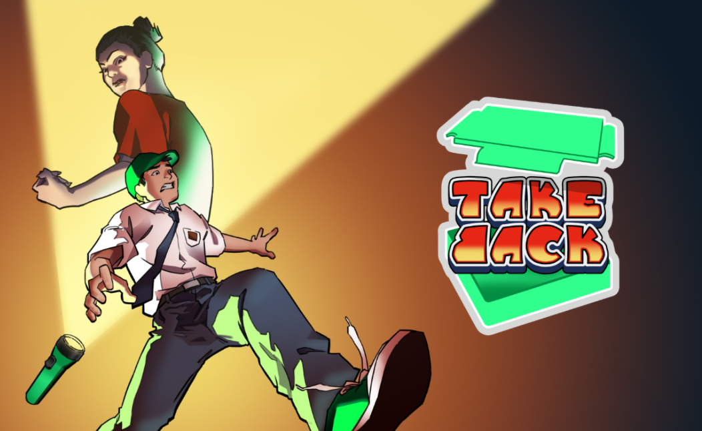

v1.0TakeBack
Take Back is a 2D top-down game about a boy named Risky who must sneak back into school to retrieve his forgotten lunchbox without getting caught by his mother.
My Role
As a Project Manager and Game Designer on Take Back, I was responsible for manage the development timeline, tracked task progress, and made sure development stayed aligned with our deadline. I also served as the main point of coordination between team members working on different parts of the game. Also i was responsible for made core loop, level design, and difficulty balancing based on internal playtesting feedback.